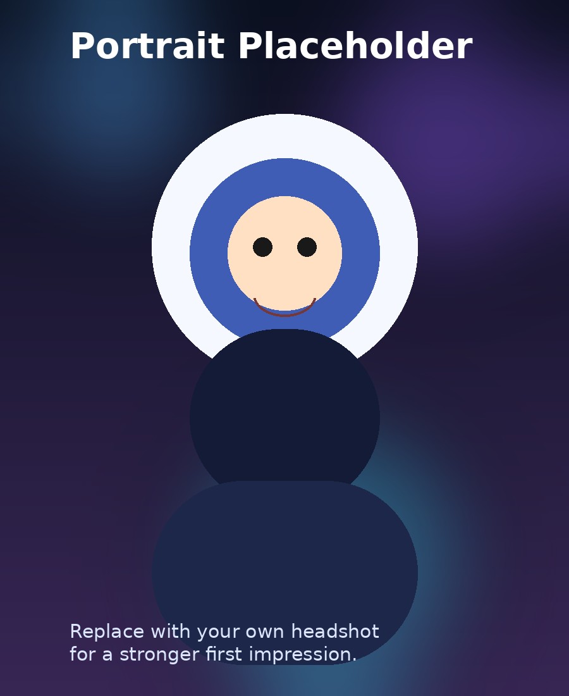
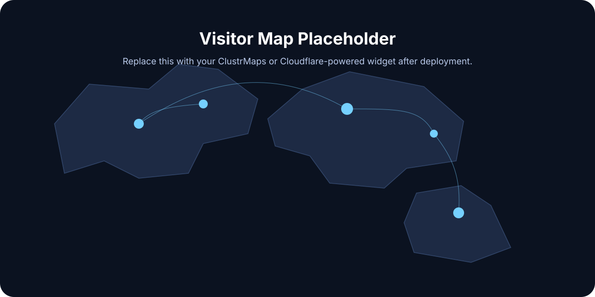

Research Interests
Large language models, decision-making agents, uncertainty estimation, search systems, retrieval, and human-AI collaboration.
I am a researcher and engineer working on intelligent systems, human-centered AI, and robust decision-making. This website is designed to showcase my profile, publications, experience, and multimedia work in one clean space.

Researcher · Engineer · Builder
This section is ideal for a concise academic bio, research interests, contact links, and one or two sentences that explain your broader mission.
Large language models, decision-making agents, uncertainty estimation, search systems, retrieval, and human-AI collaboration.
Fictional University
Focus: large language models, agent learning, and robust interaction with environments.
Example Institute of Technology
Coursework included machine learning, distributed systems, optimization, and data engineering.
Replace these placeholders with your own papers, project pages, PDFs, and code links.
A short plain-English description of the contribution, the problem it solves, and why it matters.
Summarize the key idea in two sentences. Visitors should immediately understand the topic without opening the PDF.
Use this card for recent preprints, workshop papers, arXiv reports, or technical notes.
AI Lab / Company Name
Worked on language agents, search workflows, evaluation pipelines, and scalable training systems.
Department of Computer Science
Supported courses in machine learning and data systems, with emphasis on practical experimentation and reproducibility.
Research Group Name
Led experiments, wrote papers, and built tools for model analysis, training, and deployment.
This section demonstrates how GitHub Pages can present rich media content using only static files.

Replace this image with a lab photo, poster snapshot, conference moment, project visualization, or team photo.
Replace this file with a talk recording, product demo, or short introduction reel.
Replace this file with a podcast clip, research summary, or spoken bio.
GitHub Pages is static hosting, so a live IP-based visitor map usually requires a third-party widget or an external analytics/backend service.

?d= from their script snippet.script.js.The template now supports automatic loading of a ClustrMaps map widget. Until you add your widget ID, this section will show a guided placeholder instead of a broken embed.
const VISITOR_MAP = {
provider: 'clustrmaps',
clustrmapsId: 'REPLACE_WITH_YOUR_CLUSTRMAPS_ID'
};Add your email, GitHub, Google Scholar, LinkedIn, CV, and any other preferred contact methods here.